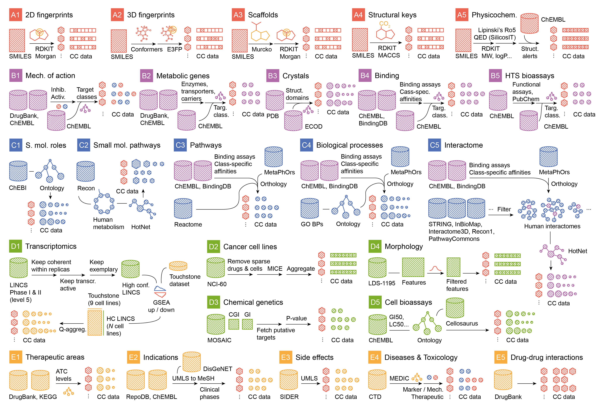

Datasets
In the CC nomenclature, a dataset is determined by:
One coordinate.
One (typically) or multiple (eventually) sources having the same type of (mergeable) data.
A pre-processing procedure yielding signatures type 0.
Levels, coordinates and datasets
The CC is divided into five levels of increasing complexity:
Level |
Name |
Description |
|---|---|---|
|
Chemistry |
Chemical properties of the compounds. |
|
Targets |
Chemical-protein interactions. |
|
Networks |
Higher-order effects of small molecules. |
|
Cells |
Readouts of compound cell-based assays. |
|
Clinics |
Clinical data of drugs and environmental chemicals. |
In turn, each level is divided into 5 sublevels or coordinates representing different aspects of the data. Each sublevel has an exemplary dataset, as described below:
Coordinate |
Name |
Description |
|---|---|---|
|
2D fingerprints |
Binary representation of the 2D structure of a molecule. The neighbourhood of every atom is encoded using circular topology hashing. |
|
3D fingerprints |
Similar to |
|
Scaffolds |
Largest molecular scaffold (usually a ring system) remaining after applying Murcko’s pruning rules. Additionally, we keep the corresponding framework, i.e. a version of the scaffold where all atoms are carbons and all bonds are single. The scaffold and the framework are encoded with path-based 1024-bit fingerprints, suitable for capturing substructures in similarity searches. |
|
Structural keys |
166 functional groups and substructures widely accepted by medicinal chemists (MACCS keys). |
|
Physicochemistry |
Physicochemical properties such as molecular weight, logP, and refractivity. Number of hydrogen-bond donors and acceptors, rings, etc. Drug-likeness measurements e.g. number of structural alerts, Lipinski’s rule-of-5 violations or chemical beauty (QED). |
|
Mechanism of action |
Drug targets with known pharmacological action and modes (agonist, antagonist, etc.). |
|
Metabolic genes |
Drug metabolizing enzymes, transporters, and carriers. |
|
Crystals |
Small molecules co-crystalized with protein chains. Data is organized according to the structural families of the protein chains. |
|
Binding |
Compound–protein binding data available in major public chemogenomics databases. Data mainly comes from academic publications and patents. Only binding affinities below a class-specific threshold are kept (kinases ≤ 30 nM, GPCRs ≤ 100 nM, nuclear receptors ≤ 100 nM, ion channels ≤ 10 uM and others ≤ 1 uM). |
|
HTS bioassays |
Hits from screening campaigns against protein targets (mainly confirmatory functional assays below 10 uM). |
|
Biological roles |
Ontology terms associated with small molecules with recognized biological roles, such as known drugs, metabolites and other natural products. |
|
Metabolic network |
Curated reconstruction of human metabolism, containing metabolites and reactions. Data is represented as a network where nodes are metabolites and edges connect substrates and products of reactions. |
|
Canonical pathways |
Canonical pathways
related to the known
receptors of
compounds (as
recorded in |
|
Biological processes |
Similar to |
|
Interactomes |
Neighborhoods of
|
|
Gene expression |
Transcriptional response of cell lines upon exposure to small molecules. A well-documented reference dataset of gene expression profiles is used to map all compound profiles using a two-sided gene set enrichment analysis. |
|
Cancer cell lines |
Small molecule sensitivity data (GI50) of a panel of 60 cancer cell lines. |
|
Chemical genetics |
Growth inhibition profiles in a panel of ~300 yeast mutants. Data are combined with yeast genetic interaction data so that compounds can be assimilated to genetic alterations when they have similar profiles. |
|
Morphology |
Changes in U-2 OS cell morphology measured after compound treatment using a mu ltiplexed-cytological cell painting assay. 812 morphology features are recorded via automated microscopy and image analysis. |
|
Cell bioassays |
Small molecule cell bioassays reported in ChEMBL, mainly growth and proliferation measurements found in the literature. |
|
Therapeutic areas |
Anatomical Therapeutic Chemical (ATC) codes of drugs. All ATC levels are considered. |
|
Indications |
Indications of approved drugs and drugs in clinical trials. A controlled medical vocabulary is used. |
|
Side effects |
Side effects extracted from drug package inserts via text-mining techniques. |
|
Disease phenotypes |
Manually curated relationships between chemicals and diseases. Chemicals include drug molecules and environmental substances, among others. |
|
Drug-drug interactions |
Changes in the effect of a drug when it is taken together with a second drug. Drug-drug interactions may alter pharmacokinetics and/or cause side effects. |
Each of the coordinates can contain an arbitrary number of datasets
with increasing number (e.g. A1.001).
Dataset characteristics
This is how we define a dataset:
Column |
Values |
Description |
|---|---|---|
Code |
e.g. |
Identifier of the dataset. |
Level |
e.g. |
The CC level. |
Coordinate |
e.g. |
Coordinates in the CC organization. |
Name |
2D fingerprints |
Display, short-name of the dataset. |
Technical name |
1024-bit Morgan fingerprints |
A more technical name for the dataset, suitable for chemo -/bio-informaticians. |
Description |
2D fingerprints are… |
This field contains a long description of the dataset. It is important that the curator outlines here the importance of the dataset, why did he/she make the decision to include it, and what are the scenarios where this dataset may be useful. |
Unknowns |
|
Does the dataset contain known/unknown data? Binding data from chemogenomics datasets, for example, are positive-unlabeled, so they do contain unknowns. Conversely, chemical fingerprints or gene expression data do not contain unknowns. |
Discrete |
|
The type of data that ultimately expresses de dataset, after the pre-processing. Categorical variables are not allowed; they must be converted to one-hot encoding or binarized. Mixed variables are not allowed, either. |
Keys |
e.g. |
In the core CC
database, most of the
times this field will
correspond to
|
Features |
e.g. |
When features
correspond to
explicit knowledge,
such as proteins,
gene ontology
processes, or
indications, we
express with this
field the type of
biological entities.
It is not allowed to
mix different feature
types. Features can,
however, have no
type, typically when
they come from a
heavily-processed
dataset, such as
gene-expression data.
Even if we use
|
Exemplary |
|
Is the dataset exemplary of the coordinate. Only one exemplary dataset is valid for each coordinate. Exemplary datasets should have good coverage (both in keys space and feature space) and acceptable quality of the data. |
Public |
|
Some datasets are public, and some are not, especially those that come from collaborations with the pharma industry. |
See the chemicalchecker.database for more information.
Dataset pre-processing
Dataset pre-processing refers to everything that happens from downloaded/calculated/user-defined data until Signature Type 0. Pre-processing can be of very different complexity:
Here is where most of the SB&NB research happens. For now, dataset
pre-processing is organized in a rather independent structure, i.e. each
dataset receives its pre-processing scripts
(see chemicalchecker.core.preprocess).